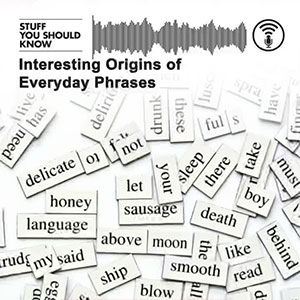

The History of Fake Towns
There have been a lot of fake towns built throughout history for a lot of different reasons, like this idyllic suburb Boeing built in the 40s to hide production of their B-17 Bombers! Learn all about these bogus burbs.
Click here to play episode on iHeartYou might also like...
Interesting Origins of Everday Phrases
December 15, 2022 49 min
We don’t think about the words and phrases we use all the time - until Josh and Chuck look into them and tell everyone what they found. That’s the gist of this episode!
Learn moreDoppelgängers: Hey you, you're me!
Seeing your near twin is probably pretty weird. But could there be a genetic commonality as well? You bet there could!
Learn more